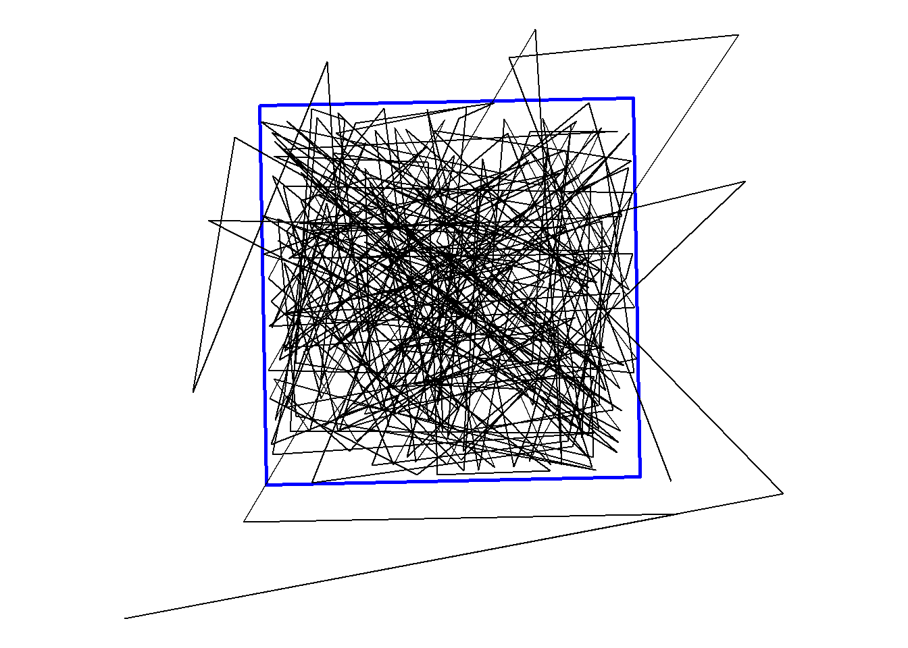
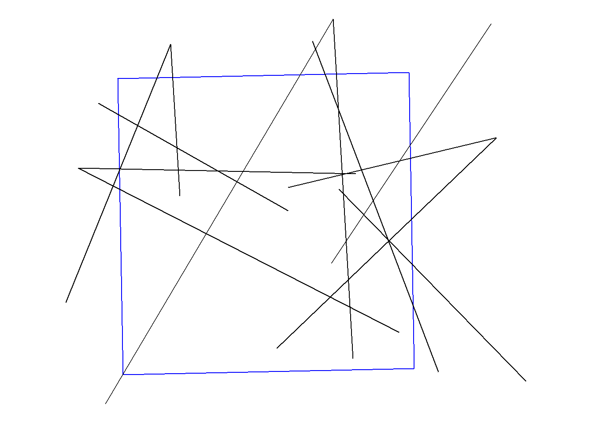

install.packages("usethis")
usethis::use_course("https://github.com/benjaminhlina/find-ts-bnd/archive/refs/heads/master.zip")0.1 Our Objectives
The purpose of this vignette is to determine when (i.e., time stamps), where (i.e., nodes) and how long, an animal takes to cross a boundary (i.e., line or polygon). The rational for wanting to determine time spent crossing a boundary could be multiple situations. For example, wanting to estimate the amount of time it took for a fish to migrate into or out of a marine protected area (MPA) or a commercial fishing zone in Lake Michigan using satellite or acoustic telemetry data. This vignette was inspired the following twitter post with the initial ideas of a solution inspired by the following blog post by Jesse Sadler focused on network analysis. Additional chunks of code came from Shortest Paths Within a Boundary - {pathroutr} and within functions in {soapcheckr}. Another interesting note is that this problem might be solved with functions from {lwgeom}, {sftime}, {move}, {crawl}, {aniMotum, {trackeR}, and {sftracks}. I don’t have as much experience using serveral of these packages but they might provide an easier workflow to answer this problem.
You can download and unzip this vignette using the following code:
0.2 load packages, data, and boundary
We will first load all the packages we need, we will use {lwgeom} to extract lat and lon of each change in direction using st_startpoint() and st_endpoint() and {sf} to find tracks that cross our boundary.
{
library(dplyr)
library(ggplot2)
library(here)
library(lwgeom)
library(purrr)
library(readr)
library(sf)
make_line <- function(lon, lat, llon, llat) {
st_linestring(matrix(c(lon, llon, lat, llat), 2, 2,))
}
}Next we will bring in our example detection data for a single fish that was tagged with a satellite or acoustic telemetry transmitter.
dat <- read_csv(here("data",
"example_movement_data.csv"))
glimpse(dat)For initial plotting purposes we will transform our detection data into a sf object that is a compilation of all the movements into a LINESTRING. We will only use dat_sf for visualization and not data manipulation to answer this problem.
dat_sf <- dat %>%
st_as_sf(coords = c("lon", "lat"), crs = 4326) %>%
group_by(id) %>%
summarise(do_union = FALSE) %>%
st_cast("LINESTRING")Next we will bring in our example MPA shapefile as a sf object. For this exercise the boundary needs to be either a LINESTRING or MULTILINESTRING as POLYGON and MULTIPOLYGON will not work because the area inside the polygon is considered filled.
bnd <- st_read(dsn = here("data",
"shapefile",
"."),
layer = "example_mpa") %>%
st_cast("MULTILINESTRING")0.3 Intial plot of movement
We will use {ggplot2} and geom_sf() to initially visualize our tracks.
ggplot() +
geom_sf(data = bnd, fill = NA, colour = "blue", linewidth = 1) +
geom_sf(data = dat_sf) +
theme_void()
We can notice that there are few times the fish moves from outside to inside of the MPA or vis versa. We want to know the location of those two nodes and the time between the detections to know how long it took the fish to move from outside to inside and vis versa.
0.4 Create our from and to data frame
We need to take the detection data and split it up so that each subsequent detection time stamp, latitude, and longitude are in a separate column. We can do this by using the lag() function from either {dplyr} or {data.table}. We will also set the argument default for dplyr::lag() to equal first(YOUR_VARIABLE_NAME) so when lagging back to the previous value for the first time, lag() does not create a NA value.
to_from <- dat %>%
mutate(
from_ts = dplyr::lag(time_stamp, default = first(time_stamp)),
to_ts = time_stamp,
llat = dplyr::lag(lat, default = first(lat)),
llon = dplyr::lag(lon, default = first(lon)),
) %>%
dplyr::select(-time_stamp)0.5 Create our tracks for each change in direction
Now that we have our to and from dataframe we are going to select the from and to latitudes and longitudes and make each movement a LINESTRING using the supplied function above make_line(). We will then convert that into a complied sf object and extract the longitudes from each movement LINESTRING using st_startpoint() and st_endpoint() from {lwgeom}. We will add this as a column to our sf object and transform it to a character because the next step involves left_join() from {dplyr} which cannot join based on a double precision numeric.
tracks_sf <- to_from %>%
dplyr::select(lon, lat, llon,llat) %>%
pmap(make_line) %>%
st_as_sfc(crs = 4326) %>%
st_sf() %>%
mutate(
lon = st_startpoint(.) %>%
st_coordinates(.) %>%
as_tibble() %>%
.$X %>%
as.character(),
llon = st_endpoint(.) %>%
st_coordinates(.) %>%
as_tibble() %>%
.$X %>%
as.character()
)0.6 Join our tracks to our from and to timestamps
First we need to make sure our from and to latitudes and longitudes are characters otherwise left_join() will not work. We will also select the columns we only need to join. If you want to know the location of each node you can select all from and to latitudes and longitudes.
to_from_select <- to_from %>%
mutate(across(.cols = c(lon, lat, llon, llat), as.character)) %>%
dplyr::select(id, lon, llon, from_ts, to_ts)Next we will left_join() our tracks sf object to our timestamps and fish id dataframe lastly we will drop the lon and llon columns as we no longer need them in our sf object unless you want the location of each from and to node.
tracks_sf <- tracks_sf %>%
left_join(to_from_select,
by = c("lon", "llon")) %>%
dplyr::select(-c("lon", "llon"))0.7 Determine the movements that fall outside the boundary
We can use st_intersects() with the sparse argument set to FALSE. This will produce a matrix of TRUE or FALSE depending on whether each LINESTRING intersects the boundary. To return a vector of TRUE/FALSE instead of a matrix we add the [TRUE] at the end of the call of st_intersects().
tracks_sf <- tracks_sf %>%
mutate(
x_bnd = st_intersects(bnd, tracks_sf, sparse = FALSE)[TRUE]
)Congratulations! We now have a column of TRUE/FALSE that lets us know whether or not the fish crossed the boundary. We can then filter out any movement that didn’t cross the boundary.
tracks_sf_x <- tracks_sf %>%
filter(x_bnd %in% TRUE)0.8 Plotting tracks that cross the boundary
We can use {ggplot} or {mapview} to view when the fish moved across the boundary. {mapview} is nice to create an interactive plot for exploration but for any type of publication or report you’ll more than likely need a static figure and can produce it using {ggplot}.
ggplot() +
geom_sf(data = bnd, colour = "blue", size = 1, fill = NA) +
geom_sf(data = tracks_sf_x) +
theme_void()
0.9 Calculate time it took to cross the boundary
We can use the base function difftime() to get the time difference between our from and to detections. By calculating the time difference we now know the duration it took the fish to migrate across the boundary.
tracks_sf_x <- tracks_sf %>%
mutate(
time_diff = difftime(to_ts, from_ts)
)You will notice that the difference in time in this example is consistent because the example dataset uses a manufactured sequence that is equally spaced. In your dataset this column should vary depending on how the fish moved.
Congratulations! You have now determined when, where, and how long it took for a fish to migrate across a boundary!